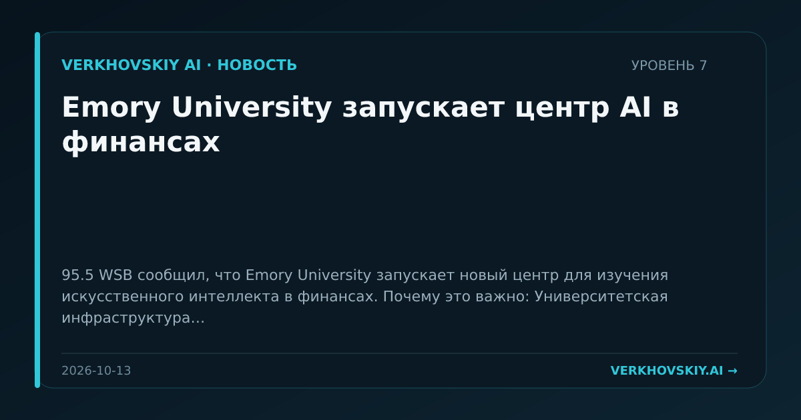

Emory University запускает центр AI в финансах
95.5 WSB сообщил, что Emory University запускает новый центр для изучения искусственного интеллекта в финансах. Почему это важно: Университетская инфраструктура начинает закреплять AI-финансы как отдельную область подготовки и трансфера знаний.